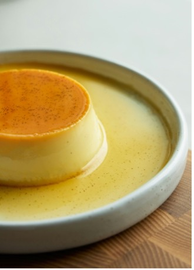

{kind=link}
Dominican Flan
As a child, flan became one of my favorite desserts to eat and make, especially with my grandma. This is my grandma’s recipe and her incredible talent of baking has blessed me with this recipe. It’s one of the easiest desserts you will ever make, I’ve been making it since I was 8 years old! If a child could do it, you can too! This dessert is irresistibly bouncy, rich, and packed with flavor in every bite. You’d be crazy if you didn’t give it a try! If you want to make this caramel, creamy, sweet delight, scroll down to see our quick and easy Flan recipe!
Dominican Flan
Prep Time
Cook Time
Yield
15 mins
1 hr
8 people
Ingredients for 8 servings
- 1 cup white sugar
- 5 eggs whites
- 3 eggs
- 1 (14 ounce) can sweetened condensed milk
- 1 (12 fluid ounce) can evaporated milk
- 1 tablespoon vanilla extract

Directions
- Preheat the oven: Preheat your oven to 350°F (175°C).
- Make the caramel: In a medium saucepan, melt 1 cup of sugar over medium-low heat until it turns liquefied and golden. Carefully pour the hot syrup into a deep 9-inch round glass baking dish, tilting the dish to evenly coat the bottom. Set aside.
- Prepare the flan mixture: Separate 5 egg whites and get 3 whole eggs. Add the eggs, sweetened condensed milk, evaporated milk, and vanilla extract into a blender. Turn the blender on and beat until the mixture is combined, but not for too long.
- Combine and bake: Pour the mixture over the caramel in the baking dish. Place the dish in a deep roasting pan, then carefully pour hot water into the roasting pan until it reaches 1 inch up the sides of the flan dish.
- Bake: Bake in the preheated oven for about 1 hour, checking after 55 minutes. The flan should be just set with a slight jiggle in the center, as it will continue to set while cooling.
- Cool and refrigerate: Once done, remove from the oven and carefully transfer the baking dish to a wire rack. Let it cool to room temperature, then cover with plastic wrap to prevent a skin from forming. Refrigerate for at least 3 hours or up to 3 days.
- Serve: To serve, run a knife around the edges of the dish. Carefully invert the flan onto a rimmed serving plate, allowing the caramel sauce to flow over it.
- Enjoy: Enjoy your delicious flan!